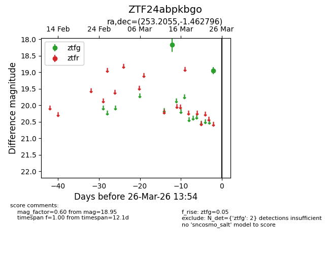
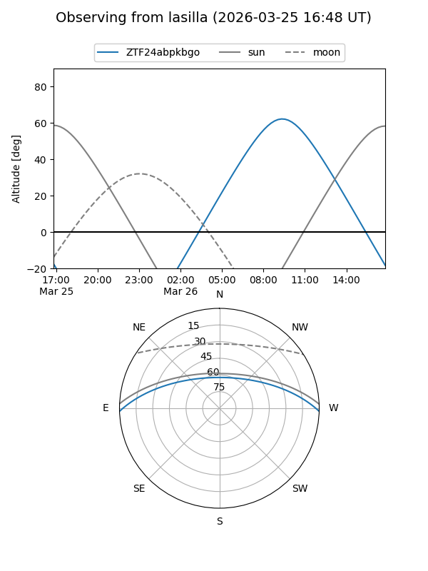
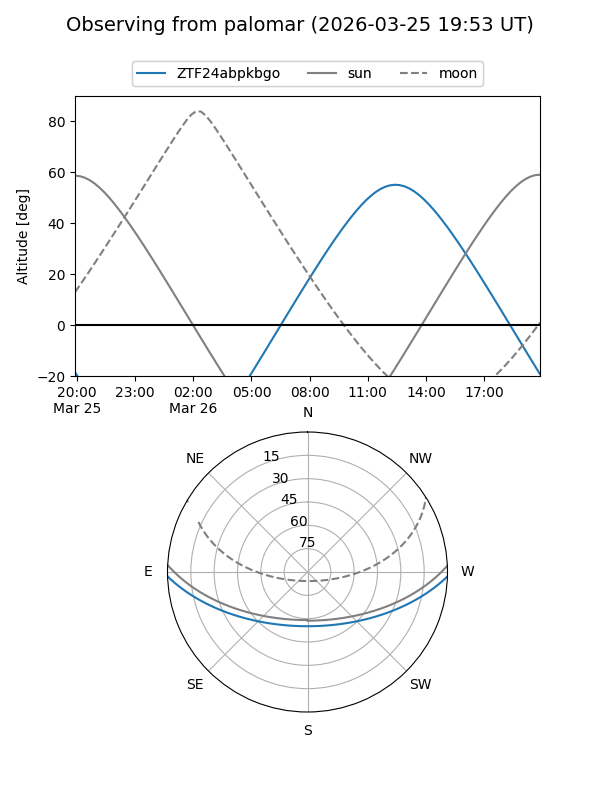

ZTF24abpkbgo
Target ZTF24abpkbgo at 2026-03-26 13:56
Aliases and brokers:
FINK: link
Lasair: link
ALeRCE: link
alt names
ZTF24abpkbgo (ztf,fink_ztf)
Coordinates:
equatorial (ra, dec) = 253.2055,-1.46280
equatorial (HMS+DMS) = 16:52:49.31,-01:27:46.07
galactic (l, b) = (16.9843,+25.37545)
Flags:
Photometry:
last ztfg=18.95
2 ztfg detections
Lightcurve

Visibility


Additional plots